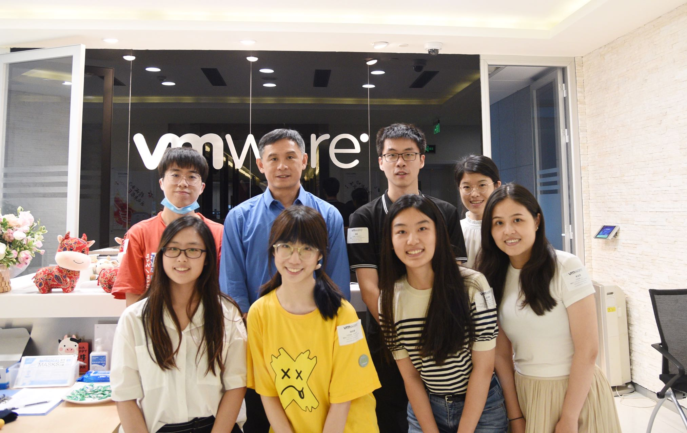
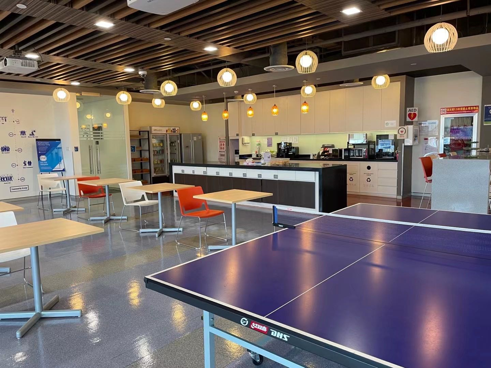
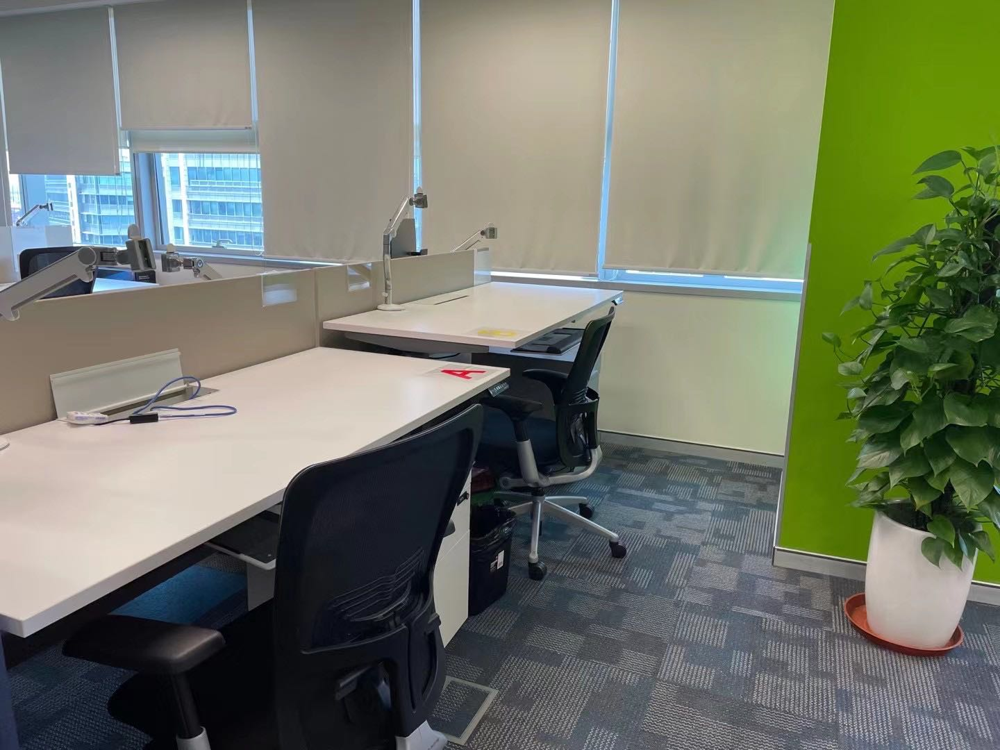
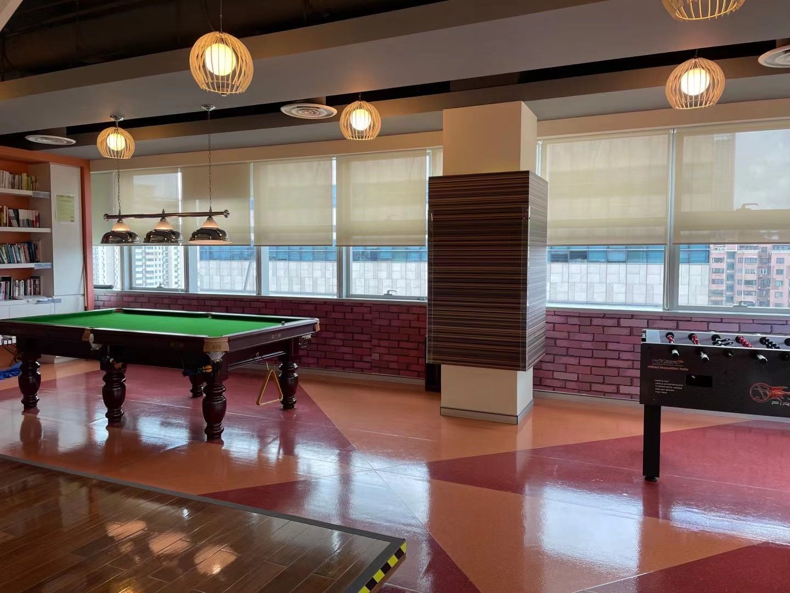

<!DOCTYPE html>
<html lang="en"></html>
<head>
	<meta charset="UTF-8">
	<!-- <meta name="viewport" content="width=device-width, initial-scale=1.0"> -->
	<!-- Link to the favicon image -->
	<link rel="icon" href="images/favicon.ico">
	<!-- Link to the reset file -->
	<!-- <link rel="stylesheet" href="css/html5reset.css"> -->
	<!-- Link to the stylesheet -->
	<!-- <link rel="stylesheet" href="css/style.css"> -->
	<title>About Me</title>
</head>

<!-- All of the visible code in the page belongs in the body tag -->
<body>
	<!-- Header is a sematic tag page that aids readability -->
	<header>
		<!-- Nav is a sematic tag page that aids accessibility -->
		<nav>
			<ul>
				<!-- Since I am on the index file I added class = action to the link to index. -->
				<li class="active"><a href = "index.html" >About Me</a></li>
				<li><a href = "personal.html">My Family</a></li>
				<li><a href = "traveling.html">My Trips</a></li>
				<li><a href = "interests.html">My Interests</a></li>
			</ul>
		</nav>
		<!-- The h1 is a semantic tag that aids accessibility -->
		<h1>H. Cora Zhang</h1>
	</header>

	<!-- Every page should have a main tag for accessibility -->
	<main>
		<p>
		   I am currently a graduate student in School of Information, University of Michigan, Ann Arbor 
		   with specialization in Big Data Analytics and Software Engineer. I graduated from Shanghai 
		   Jiao Tong University in 2021.
		</p>
		
		
		
		
		
		<!-- Make sure your anchor tags have a link (href) and a clickable component -->
		
		<p>
			Previously, I worked at VMware Inc. as a software engineer intern. 
			I led and went through the whole process of the intern project with a valuable deliverable: 
			a storage forecasting model that successfully captures the customer patterns and will be 
			deployed to the real company product. 
		</p>
		
		
		
		
		
	</main>

	<!-- Footer is a sematic tag page that aids readability -->
	<footer>
		<p>H. Cora Zhang &copy; 2022</p>
	</footer>
</body>
</html>
